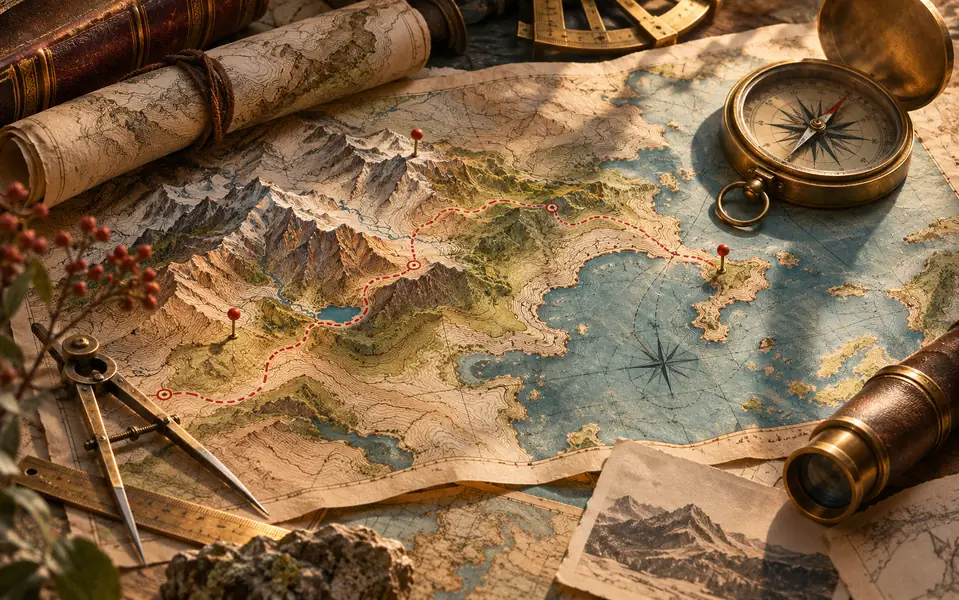

Kembali ke pilihan desain
Lazarus Dev
Cartography
Karya atau pengalaman disusun menurut lokasi dan perjalanan.

Ilustrasi konsep desain, bukan screenshot website jadi.
Pilih Cartography
Lihat desain lainnya